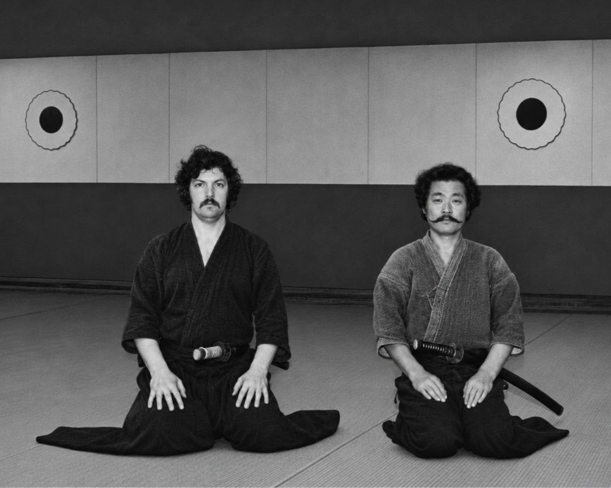

Our beginnings

Réal Genest formally established Sandokai Kobudo Shugyokai in 1983, when he launched the first shinai geiko, or sport kendō, class at Cégep de Saint-Jérôme.
At the request of Takeshi Mitsuzuka Sensei and Yanagiya Kosan Sensei, he brought together people who shared an interest in Japanese culture and were seeking a spiritual path. This initiative grew out of his training in Japan and the years of training following his return to Canada in 1974.
The group soon expanded its training to include traditional kendō and iaidō, followed by seitei jō, a set of twelve jōdō kata developed by the All Japan Kendo Federation.
In 2014, on the advice of Tsunemori Kaminoda Sensei, Sandokai contacted Daniel Pearson Sensei to deepen its study of jōdō. Several members then began training in Shindō Musō Ryū jōdō, a traditional martial school.